Рассмотрим установку веб-сервера на примере apache, которая осуществляется одинаково на всех версиях Windows. Для установки и настройки веб-сервера IIS воспользуйтесь соответствующими статьями в интернет.
1. Скачайте с официального сайта Apache Software Foundation дистрибутив программы. Последние версии веб-сервера для Windows доступны на странице http://apache-mirror.rbc.ru/pub/apache/httpd/binaries/win32/, например вот эта:
httpd-2.2.25-win32-x86-no_ssl.msi
Обратите внимание: для успешной установки веб-сервера желательно запускать скачанный файл с правами администратора.
2. Запустите скачанный файл на исполнение и в приветственном окне нажмите кнопку «Next». Нажмите эту же кнопку еще несколько раз, для принятия условий лицензии и ознакомления с инструкцией, пока не доберетесь до экрана с информацией о сервере:
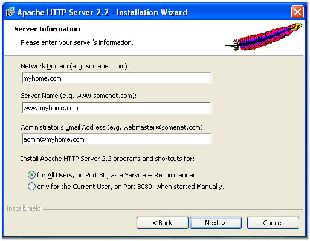
Придумайте и заполните латинскими буквами имя своего домена (на картинке он назван «myhome.com»). Используйте придуманное имя, чтобы заполнить и другие поля по образцу, показанному на картинке.
Прочие настройки оставьте без изменения и нажмите кнопку «Next».
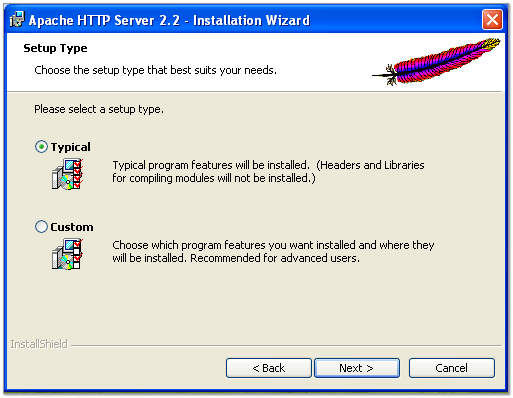
Если нет желания указать программе какие-либо особые настройки, то оставьте отмеченным вариант «Typical» и снова нажмите кнопку «Next».
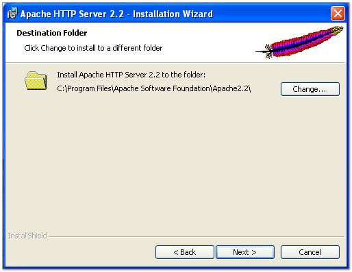
Программа предложит указать каталог для установки. Можете оставить каталог, предложенный самой программой, или выбрать какой-нибудь более удобный, например «C:\Apache». На всякий случай запомните, где установлен ваш веб-сервер. Если потребуется что-либо изменить в его настройках нужные файлы вы найдете именно в этом каталоге.
И снова нажмите кнопку «Next».
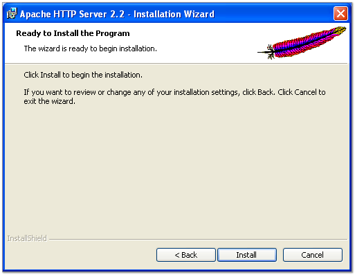
Для завершения установки нажмите кнопку «Install».
Программа установит на Ваш компьютер веб-сервер apache, выполнит его запуск и сообщит об успешном окончании установки.
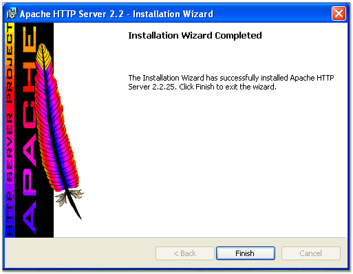
Если сервер запущен и работает правильно, в системном трее будет виден значок перышка с зеленым треугольничком:
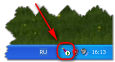
3. Проверяем работоспособность установленного веб-сервера. Для этого открываем браузер и в адресной строке набираем «localhost». Если все в порядке, то ваш веб-сервер отрапортует бодрым сообщением:
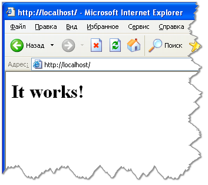
На этом установку веб-сервера можно считать завершенной.
4. Если вы не получили сообщения «It works!» в своем браузере, и в значке с пером в системном трее горит красная точка, значит сервер не сумел запуститься из-за каких-то проблем.
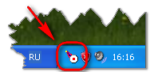
Чаще всего веб-сервер не может запуститься из-за некоторых других программ, которые заняли порт 80, обычно используемый веб-серверами. Такими программами могут быть Skype, TeamWiever или другие веб-сервера, уже установленные на вашем компьютере.
Чтобы определить, какие программы прослушивают порт 80, выполните следующее:
- запустите командное окно cmd.exe, например, нажав клавиши Win+R, и набрав в строке «cmd.exe»
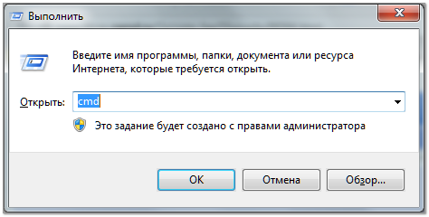
В открывшемся окне наберите команду «netstat -nab». Эта команда выведет список всех занятых портов и названия программ, которые их прослушивают.
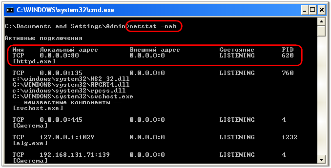
Номер порта всегда указывается после адреса (в данном случае – после локального адреса) через двоеточие. Ниже будет указано название программы, занявшей порт по указанному адресу.
Определив программы, которые заняли нужный порт, можно попытаться изменить их настройки. Или, если нет такого желания / возможности, можно изменить порт вашего веб-сервера apache.
5. Для изменения порта веб-сервера откройте каталог, в который его установили и найдите файл «\conf\httpd.conf». Этот файл содержит основные настройки вашего веб-сервера и представляет собой простой текстовый файл, который можно редактировать любым текстовым редактором. Откройте этот файл и найдите строку «Listen 80».
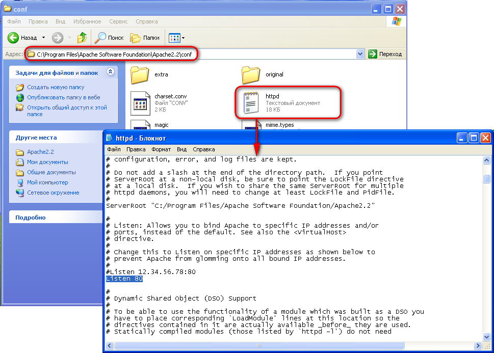
Эта строка и задает номер порта, с которым будет работать веб-сервер. Исправьте номер «80» на любой другой приглянувшийся номер, начиная с 1024 и до 65000.
Перезапустите свой веб-сервер:
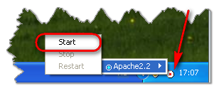
Убедитесь, что он работает, набрав в адресной строке браузера строку «localhost:НомерПорта» (вместо «НомерПорта» напишите число, указанное в файле httpd.conf. На примере, приведенном на рисунке это порт с номером «4488»)
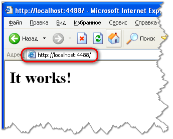
Обратите внимание: если вы измените номер порта с «80» на какой-либо другой, вам придется указывать новый номер порта во всех адресных строках обращения к веб-серверу.